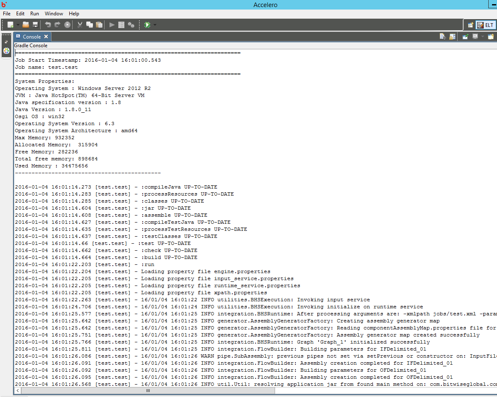
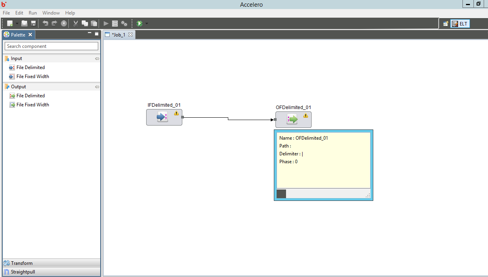

Accelero Help
Accelero Help
Job Console
Accelero Release Version 1.0
Job Console acts as an interface that displays execution results of the job that is currently running.
It is used to monitor the execution of a job step-by-step. Along with the timestamp of job execution and the user's system details are also displayed in the console.

Component Tool tip shows up for each component on mouse-hover. The tool-tip can be focussed into and displays the properties of the component along with errors if any.
